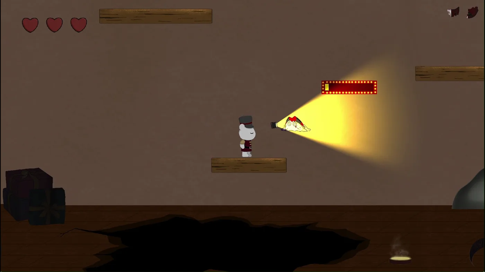
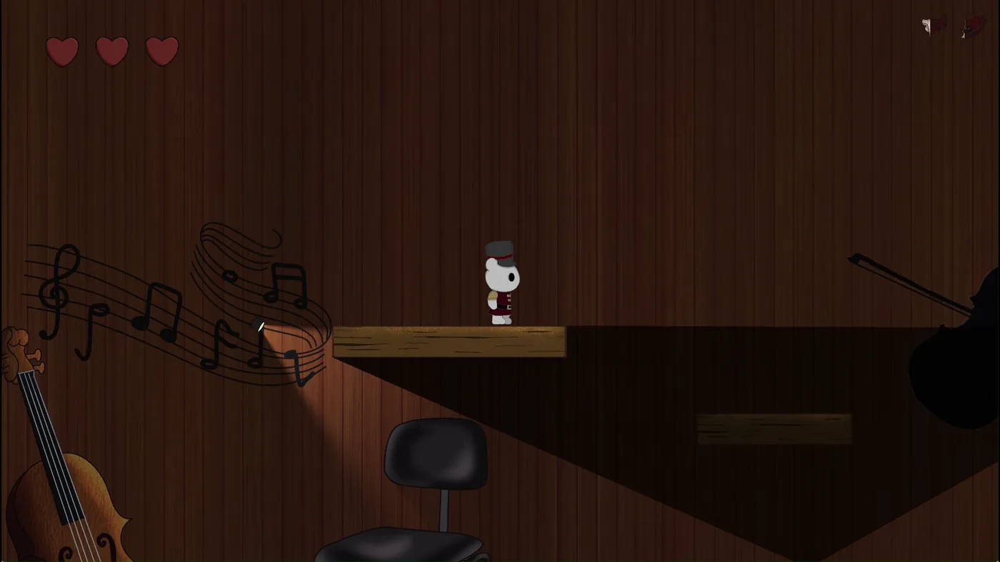
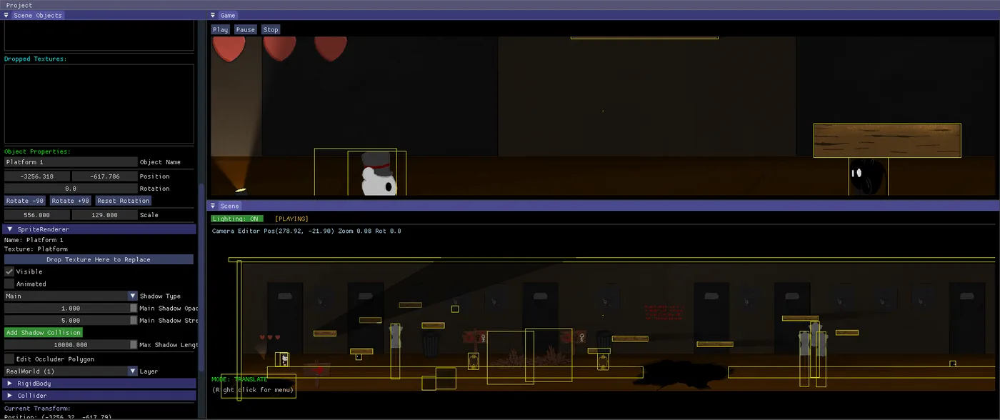

The Last Act
A 2D puzzle-platformer set in a haunted theatre, where you play as a doll and its shadow.
- Technical lead and graphics
- 8-person team
- Custom C++ and OpenGL engine
- Sep 2025 to Apr 2026
- The problem
- Light and shadow are the level. Moving a stage light changes where the shadow can walk, so the lighting had to be gameplay, not decoration.
- The constraint
- We wrote our own engine, so there was no lighting system to start from, and our designers needed to set up shadows without touching code.
- What I built
- The spotlight and shadow system, enemies that are stunned only inside the beam, and shadow movement across slopes. For the editor, I built a shadow shape tool, shadow collision editing, a live lighting preview and an animation editor.
- What went wrong
- My first shadows didn't sit properly on slopes. The shadow form slid and floated instead of looking like it stood on the surface.
- What I changed
- I reworked how the shadow collides with sloped shadows until it stayed grounded, and gave designers a shape editor so they could adjust each object's shadow by hand.
- What happened
- The game shipped with every puzzle built on the lighting system.